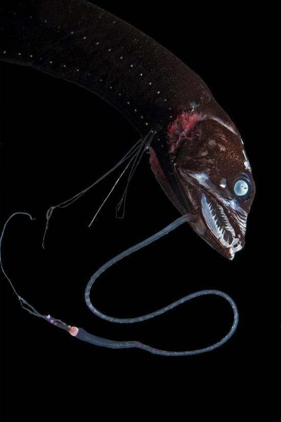

在浩瀚而黑暗的海洋中，鱼的伪装技术提升到了新的水平。蝰鱼等生物则演化得更黑，黑到近在眼前你却看不见。
杜克大学的海洋生物学家松克·约翰森（Sonke Johnsen）指出，“当你观察它们时，尤其在水中，它就像宇宙中的一个洞。”他主要研究深海生物。
这些“超黑鱼类”（深色深海生物的统称）如何让身体有效地隐匿起来？科学家们正对此展开研究。
约翰森及其同事凯伦·奥斯本（Karen Osborn）发现，鱼类皮肤中复杂的纳米结构能够捕捉入射光子，并吸收几乎所有照到它们身上的光线。今年1月，该团队在综合与比较生物学学会（Society for Integrative and Comparative Biology）年会上介绍了他们的研究成果。奥斯本同时也是史密森尼国家自然历史博物馆的无脊椎动物学家。
他说，“我们原本以为这些鱼身上存在大量的色素。后来我们发现，它们的隐匿特性相当有组织性，从而让身体尽可能地变黑。”
在恒久黑暗的海洋深处，为什么拥有这种光学特征是必要的？
光子被困 如同游戏机中的弹球
由于深海中的食物很稀少，捕食局面很惨烈。琵琶鱼等动物已进化出一系列搜索猎物的工具，如，能够探测移动物体的须状棘（whiskery spine）。
许多海底生物还能用发光器官来扫射周边环境。
约翰森指出，“想象一下这样一个世界，你打开手电筒，但照不到任何东西。只不过偶尔它也会被某种生物撞到，就像被雷达命中一样。”
深海鱼类唯一的防御机制就是效仿广阔的海水。他表示，“基本上必须吸收所有照到身上的光线。”
约翰森表示，为了吸收所有光线，仅有大量黑色素是不够的。关键是皮肤的表面。
如果鱼的皮肤光滑而构造简单，可见光子就会反射到饥饿掠食者的眼中。但表面结构越复杂，光子就越有可能被困住，就像弹球在游戏机中那样弹跳。
在最近的实验中，奥斯本查看了从野外收集的七种超黑鱼类的表面结构。她发现了一小块黑色素（与人体内的黑色素相同）以令人眼花缭乱的微观结构排列，仿佛一种非常棘手的弹球游戏，光线根本没有机会逃逸。
根据约翰森和奥斯本的研究，一些超黑鱼类的光吸收率高达99.9%。换言之，每1000个光子中只有1个能够逃脱。
最黑的生物是什么？
超黑鱼类是人类已知的最黑生物之一。